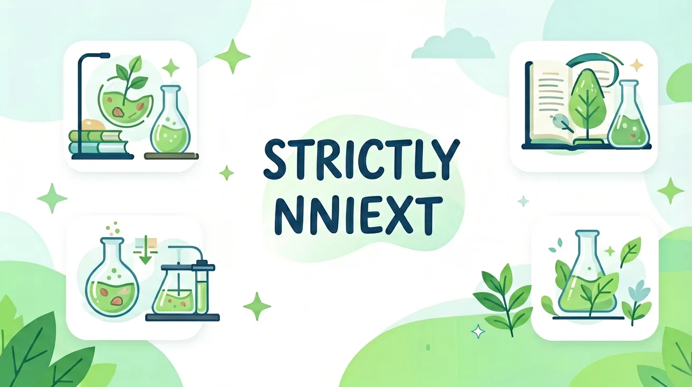
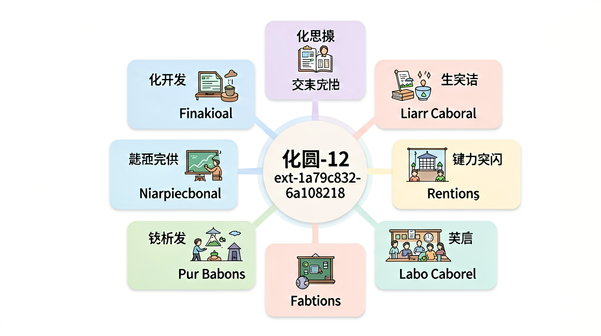
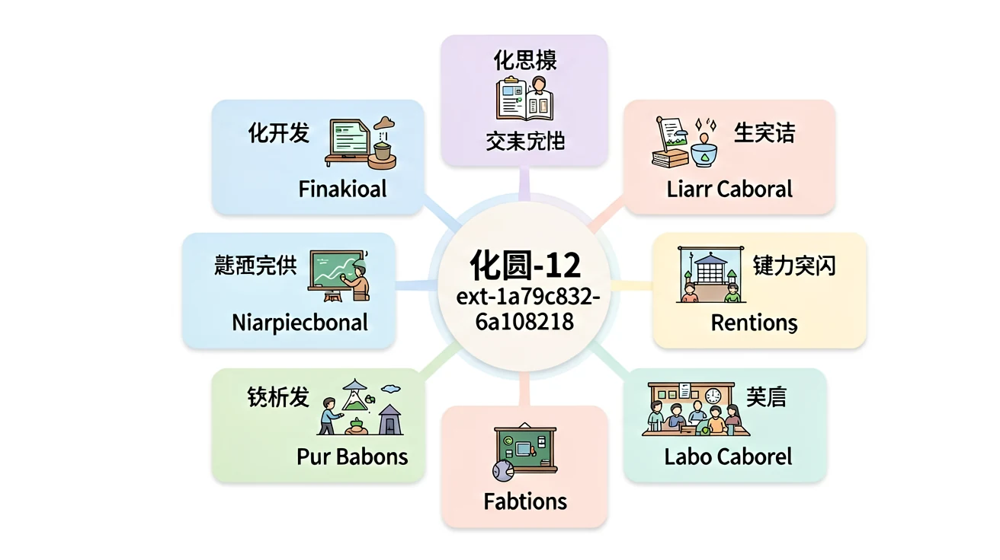

正在打开课件，请稍候…
正在打开课件，请稍候…

化学反应是原子或分子间重新组合的过程，其本质是旧化学键断裂和新化学键形成。例如铁生锈（4Fe + 3O₂ → 2Fe₂O₃）中，铁原子与氧分子通过电子转移形成离子键。生活中更直观的例子是小苏打（NaHCO₃）与醋（CH₃COOH）反应产生二氧化碳气泡，此时碳酸氢根离子（HCO₃⁻）与氢离子（H⁺）结合生成不稳定的碳酸（H₂CO₃），随即分解为CO₂和H₂O。通过球棍模型演示甲烷（CH₄）燃烧时C-H键断裂、O=O键断裂、C=O和O-H键形成的过程，能直观展示反应前后原子重组情况。
拉瓦锡通过精密实验证明：反应前后总质量不变。在密闭容器中燃烧镁条（2Mg + O₂ → 2MgO），虽然镁条变重，但系统总质量不变——这是因为吸收了容器内的氧气。学生可自制简易验证装置：用气球密封的锥形瓶内进行小苏打与柠檬酸反应，观察到气球膨胀但总质量不变（NaHCO₃ + C₆H₈O₇ → NaC₆H₇O₇ + H₂O + CO₂↑）。工业上炼铁高炉的原料（铁矿石+焦炭）与产物（生铁+炉渣）质量严格核算也是该定律的应用。特别注意：核反应因涉及质能转换不适用此定律。
催化剂通过降低活化能改变反应路径而不被消耗。以过氧化氢分解为例（2H₂O₂ → 2H₂O + O₂↑），加入二氧化锰后反应速率显著提升——锰离子在反应中经历Mn⁴⁺→Mn³⁺→Mn⁴⁺的循环变化。生物体内的酶是高效催化剂，如口腔淀粉酶能在37℃温和条件下将淀粉水解为麦芽糖，而工业合成氨需要铁催化剂在450℃高压下进行（N₂ + 3H₂ ⇌ 2NH₃）。汽车尾气处理装置中的铂-铑催化剂可将有害的CO和NO转化为CO₂和N₂，展示催化剂在环保中的应用价值。
浓度定量描述溶质与溶剂的相对量。质量分数（ω）常用于食品标签，如生理盐水为0.9% NaCl溶液；体积分数（φ）用于酒精消毒液（75%乙醇）；而摩尔浓度（c）是化学计算的基石。配制250mL 0.1mol/L NaOH溶液需精确称取1.0g NaOH固体溶解定容，若用量筒代替容量瓶会导致浓度偏差。医院输液使用的葡萄糖注射液通常标注5%（质量体积比），即每100mL溶液含5g葡萄糖。特殊情况下使用ppm（百万分之一）表示微量成分，如饮用水重金属含量标准。
指示剂通过结构变化呈现不同颜色。酚酞在pH<8.3时无色（内酯结构），pH>10时呈粉红色（醌式结构）；甲基橙在pH>4.4显黄色（偶氮式），pH<3.1变红色（醌式）。紫甘蓝汁含花青素，遇酸变红、遇碱变绿，可制作天然pH试纸。学生实验常见误区：将大量指示剂加入待测液导致颜色过深。工业pH计采用复合电极，其玻璃膜对H⁺的选择性响应比指示剂更精确。生物体内血红蛋白也是酸碱指示剂，其颜色变化反映血液pH值（正常7.35-7.45）。
通过氧化数变化识别电子转移。锌铜原电池中（Zn + Cu²⁺ → Zn²⁺ + Cu），锌原子（氧化数0→+2）失去电子被氧化，铜离子（+2→0）获得电子被还原。漂白剂次氯酸钠（NaClO）的消毒作用源于Cl⁺被还原为Cl⁻时夺取微生物的电子。学生常混淆：浓硝酸（HNO₃）与铜反应时氮的氧化数从+5降至+4（生成NO₂），而稀硝酸中降至+2（生成NO）。锂电池充电时Li⁺在正负极间迁移（LiCoO₂ ⇌ Li₁₋ₓCoO₂ + xLi⁺ + xe⁻），是氧化还原反应的典型应用。
晶体中微粒呈周期性有序排列。食盐（NaCl）是面心立方晶格，每个Na⁺周围有6个Cl⁻配位；干冰（CO₂）是分子晶体，分子间仅靠范德华力结合。石墨层状结构中碳原子sp²杂化形成六元环，层间存在离域π电子使其导电。学生制作晶体模型时需注意：金刚石中每个碳原子形成4个等性sp³杂化键，键角109.5°。形状记忆合金（如镍钛诺）的相变源于温度改变时晶体结构的可逆转变。X射线衍射图谱中的明锐峰是晶体长程有序的特征证明。
官能团决定有机物主要性质。羟基（-OH）使乙醇易溶于水（形成氢键），羧基（-COOH）让醋酸呈酸性（电离出H⁺）。乙烯（CH₂=CH₂）的碳碳双键使其能与溴发生加成反应（Br₂的棕红色褪去），而乙烷（CH₃-CH₃）只能发生取代反应。生物柴油通过植物油（甘油三酯）与甲醇酯交换反应制备，本质是酯基（-COOR）转化为新的酯类。学生易忽略：甲醛（HCHO）虽含醛基但常温下是气体，其40%水溶液即福尔马林。聚合物聚乙烯由乙烯单体（CH₂=CH₂）通过加聚反应形成长链。
1. 铁钉生锈后质量会增加，这是否违反质量守恒定律？2. 为什么喝碳酸饮料会打嗝？3. 如何用厨房材料证明催化剂的存在？
1. 写出锌与稀硫酸反应的离子方程式，并标出电子转移方向。2. 配制100g 10%的食盐溶液需要NaCl和水各多少克？3. 为什么酸性土壤中紫甘蓝汁液会变红？
错因1：认为催化剂会提高产物产量（实际只改变速率）。误区2：将溶液颜色变化等同于浓度变化（需考虑显色物质本身特性）。诊断3：忽略氧化还原反应中的介质影响（如酸性条件下KMnO₄还原产物为Mn²⁺，中性生成MnO₂）。
设计任务：探究不同水果（柠檬、苹果、香蕉）作为原电池电极时的电流输出差异，分析其有机酸含量与发电效率的关系，提出改进方案。

先独立作答，再点选项查看对错与错因。
当浓盐酸稀释100倍时，pH值变化正确的是
鉴别浓盐酸和稀氢氧化钠溶液时，最安全的操作是
pH试纸接触浓盐酸后呈现的颜色是
浓盐酸稀释操作时，应将____缓慢倒入____中
答案：浓盐酸,水
避免放热导致液体飞溅
pH=2的盐酸稀释到pH=4，需要加水____倍
答案：100
pH每增加1对应稀释10倍
关于浓盐酸特性的说法正确的是
给定三瓶未贴标签的无色液体，设计实验步骤并说明依据
And：学生知道化学反应会生成新物质
But：但认为反应前后总质量可能改变
Therefore：通过实验揭示质量守恒的微观本质
质量守恒定律指反应前后总质量不变。比如镁条燃烧实验：称量2.4g镁条和1.6g氧气反应，生成的氧化镁正好是4.0g。这是因为镁原子和氧原子只是重新组合，没有消失或新增。就像搭积木，拆开后零件总数不变，只是换了种拼法。
🌍 烧烤时木炭燃烧变轻了？其实碳原子变成二氧化碳气体飘走了！如果用密闭容器称重，会发现燃烧前后总质量不变。这就是为什么火箭发射要带液氧——燃烧剂的质量会转化成废气质量。
铁钉生锈后质量如何变化？
